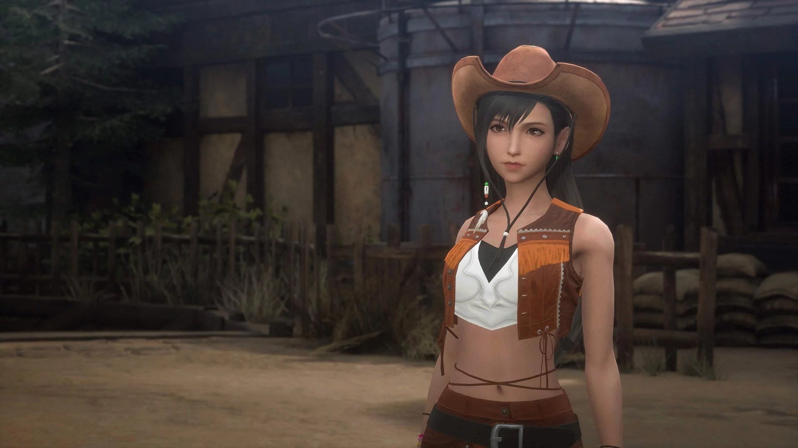

Tifa grew up with Cloud in Nibelheim, but lost contact with him years ago. When she meets him again, she convinces him to join Avalanche to fight the Shinra Electric Power Company, whom she bears hatred for due to the destruction of their hometown. She supports Cloud as his comrade and helps him and his allies fight Sephiroth. Tifa is reserved, moral, and empathic, acting as a motherly figure towards her allies when providing encouragement and emotional support. She also serves as the voice of reason grounding them to think things through and do the right thing.
In contrast to her shy personality, Tifa has a vigorous combat style, typically fighting at close range with her fists. Trained by Rashard Zangan, she uses martial arts skills to fight opponents, and equips knuckles as her weapons. In the original Final Fantasy VII, unlike other characters, her Limit abilities, each a different martial arts technique, are not selected from a list, rather, each ability can be used consecutively if the slots land on the "Yeah!" reel for the ability. Tifa has a similar role in Final Fantasy VII Remake as an agile close combat fighter making use of powerful techniques in battle, with a unique ability based on her Unbridled Strength chi level.